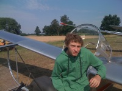
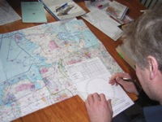

Segelflug (SPL oder LAPL(S))
{kind=link}

Segelfliegen ist Teamsport. Als ursprünglichste Form des „Fliegens“ gilt Segelfliegen in Deutschland als klassischer Einstieg zum Erwerb der Privat – Piloten – Lizenz (PPL(A) bzw. LAPL(A)). Die Ausbildung zum Segelflugpiloten gliedert sich in 3 Abschnitte:
- Ausbildung zum Alleinflug - In diesem Ausbildungsabschnitt fliegst Du ein doppelsitziges Segelflugzeug. Im vorderen Cockpit sitzt du, dahinter dein Fluglehrer, welcher im Bedarfsfall über ein Doppelsteuer eingreifen kann. Nach ca. 30 - 200 Starts hast du soviel gelernt, dass du dein Flugzeug für den sicheren Alleinflug sicher beherrscht. Dann ist die Zeit für Deinen ersten Alleinflug gekommen. Das Ende dieses Ausbildungsabschnitts sind drei Platzrunden, die du alleine mit dem Segelflugzeug fliegen wirst – nun hast dich FREIGEFLOGEN - DIESEN TAG VERGISST DU NIE !
- Vertiefung der fliegerischen Fähigkeiten - Ab jetzt fliegst du überwiegend alleine unter Aufsicht eines Fluglehrers, der am Boden ist und dir bei Bedarf per Funk mit Hilfe und Tipps zur Seite steht. Nach einiger Zeit wirst du andere einsitzige Flugzeugmuster kennen lernen, mit denen du längere Flüge allein machst und immer mehr deine fliegerischen Fähigkeiten z.B. im Finden und Nutzen von Aufwinden vertiefst.
-
Ausbildung zum Streckenflug - Im letzten Ausbildungsabschnitt erlernst du den Streckensegelflug. Einerseits erlernst du, das Flugzeug und die Auswinde optimal zu nutzen, um Entfernungen zu überwinden, andererseits den Streckenflug unter Berücksichtigung von Wetter und Gelände entsprechend zu planen. In diesem Rahmen wird dein Fluglehrer mit dir üben, wie man Außenlandungen mit einem Segelflugzeug außerhalb von Flugplätzen z.B. auf einem Acker, macht, falls die Aufwinde ausbleiben. So eine Landung nennt man Sicherheitsaußenlandung; sie ist für Segelflieger etwas völlig Normales!
 Dieser letzte Ausbildungsabschnitt endet mit einer theoretischen und praktischen Prüfung sowie einem selbständig durchgeführten 50km Flug. Für die Theorie müssen ca. 50 Übungsstunden in den Fächern Aerodynamik, Navigation, Meteorologie, Technik, Luftrecht, menschliches Leistungsvermögen, Verhalten in besonderen Fällen investiert werden. Neben dem Beitrag fallen noch Kosten für Prüfungsgebühren, ein Fliegerärztliches Tauglichkeitszeugnis und Funksprechzeugnis (BZF), sowie Lehrmaterial an. Am Ende werden dann ca. 250 Flüge in Deinem Flugbuch stehen und eine Pilotenlizenz für Segelflugzeuge (SPL bzw. LAPL(S)), die dich berechtigt, alle Segelflugzeugtypen zu fliegen und Gäste mitzunehmen.
{kind=link}
{kind=link}
{kind=link}
{kind=link}
Tag der offenen Tür am 23.06.2019.

Informationen, Flugbetrieb & Flugausbildung
LSV Lüchow-Dannenberg e.V.
Postfach 1213
29439 Lüchow
Tel • +49 (0)5841-2388
Mail • info@lsv-luechow.de
ICAO • EDHC
Callsign / Tower • Lüchow Info @ 125.365 MHz
Elevation • 50 ft / 15 m
Coordinates • N 53 00.91 E 11 08.65